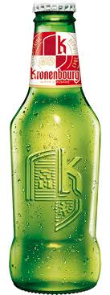
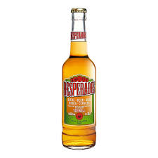
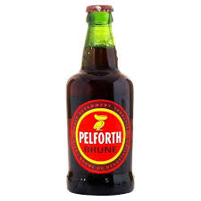
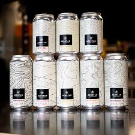
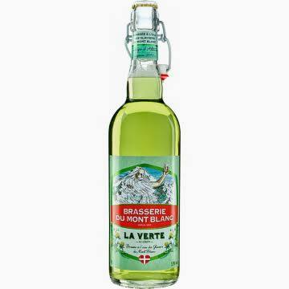
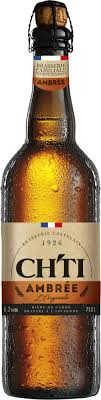

Des brasseries artisanales françaises, riches en saveurs

Fondée à Strasbourg en 1664, c'est la bière française la plus vendue dans le monde. Légère et rafraîchissante, avec des notes d'agrumes.

Bière blonde française aromatisée à la tequila. Une recette unique, fruitée et festive, née en France et devenue un succès mondial.

Bière brune emblématique du Nord de la France, brassée à Lille depuis 1921. Riche en malt, avec des arômes de caramel et de torréfaction.

Située à Sautron depuis 2018, AERoFAB est une brasserie artisanale et un lieu de rencontre. Ils produisent des bières créatives sans concession.

Brasserie artisanale savoyarde utilisant l'eau des glaciers des Alpes. Bière blonde pure et minérale, au caractère montagnard affirmé.

Fierté de la brasserie Castelain dans le Pas-de-Calais. Une bière ambrée charnue aux notes de miel et de fruits secs, dans la grande tradition du Nord.
Longtemps éclipsée par les grands pays brassicoles voisins, la France connaît depuis les années 2000 une véritable renaissance brassicole. Des centaines de micro-brasseries artisanales ont vu le jour, proposant des recettes créatives et ancrées dans les terroirs locaux.
Des houblons alsaciens aux orges bretonnes, en passant par les eaux alpines, chaque région apporte sa signature à une bière désormais reconnue sur la scène internationale.
Voir toutes les bières